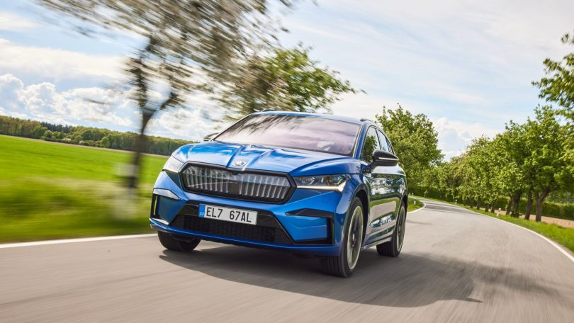
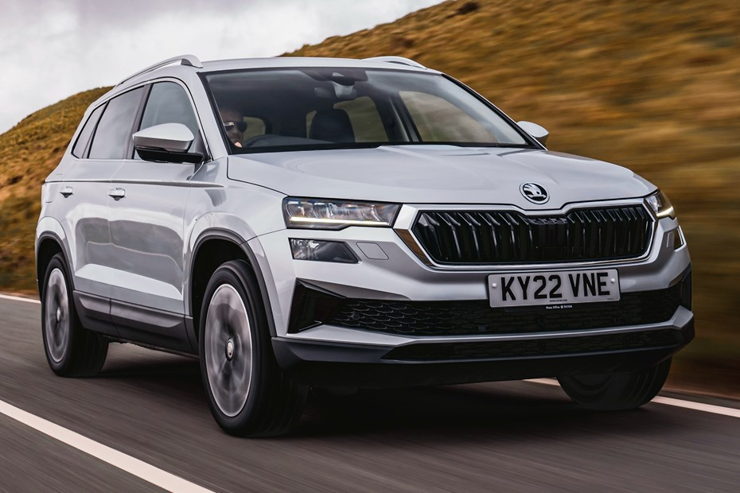

Avec TOPCAR, vous profitez des locations à prix compétitifs bien étudiés adaptés aux différents budgets des particuliers et des professionnels, tout en disposant d’un parc assez varié de voitures en excellent état et très bien entretenues, ainsi que de voitures de haute gamme.
Un service d'assistance continu (24/24, 7j/7).
Des transferts sur tout le territoire tunisien et des réceptions des Aéroports : Tunis Carthage, Monastir et Enfidha.
La livraison de voitures dans le lieu, l’heure et le jour de votre convenance. La gratuité de la livraison est offerte pour l’Aéroport Tunis Carthage, l’Aéroport de Monastir et l’Aéroport d’Enfidha, ainsi que pour toute destination à la région de Sousse et dans le grand Tunis.
TOPCAR, vous profitez des locations à prix compétitifs bien étudiés adaptés aux différents budgets des particuliers et des professionnels.
TOPCAR est une société spécialisée dans la location de voitures en Tunisie. Forte de son parc qui compte plus que 100 voitures et de son expérience, nous offrons aujourd’hui à nos clients un service de qualité.
Nous assurons les transferts, nous offrons aussi le service de location avec chauffeurs.
Notre parc compte des voitures variées comprenant de petites voitures citadines et des voitures de luxe.
TOPCAR peut vous assurer que vous trouverez le meilleur service de location de voiture pour vos visites en Tunisie et les meilleurs tarifs.
Nos conseillers sont toujours disponibles pour toutes demandes de renseignement, d’assistance et de conseil. Il suffit de nous contacter sur le téléphone de l’une de nos agences.
TOPCARvous offre un service de transfert professionnel. Un chauffeur courtois vous accompagnera dans vos transferts dans tout le territoire tunisien.